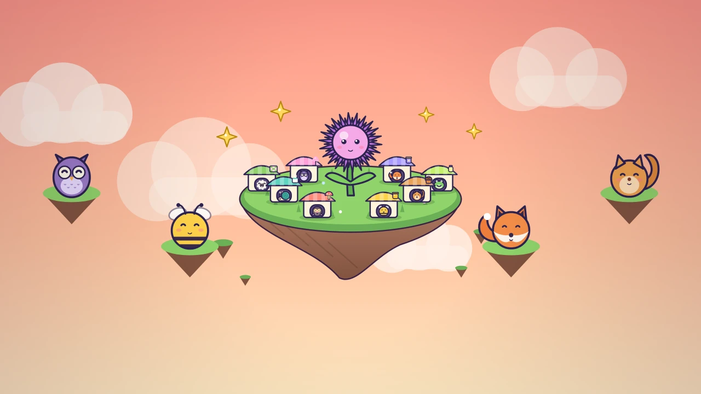

Thistlewhirl
Tap the big thistle, open cosy critter stalls on a floating meadow island, hire helpers who earn while you're away, and wish for a permanent bonus.
Thistlewhirl is a cosy idle tycoon set on a little floating meadow in the sky. Tap the big smiling thistle to earn sparkly glimmers, then spend them on critter stalls: Shelly the snail's Dew Tea Stand, Pip the squirrel's Acorn Muffin Oven, Moley's Mushroom Lamp Workshop, Bumble's Honeycomb Hive and four more, all the way up to Fennel the fox's Starjam Observatory. Each stall pops up as a tiny hut on your island and bounces every time it finishes a batch.
A stall without a helper only works when you tap it, so the first minutes are hands-on. Hire a critter helper and their stall runs by itself, even while you are away. Level stalls up one at a time, ten at a time, a hundred at a time or as many as you can afford, and watch for milestones: every 25, 50, 100 and more levels doubles that stall's output. Upgrades say exactly what they do in plain words, such as +100% Acorn Muffin Oven output or helpers keep earning for longer while you are away.
The story moves in chapters. Each chapter has three clear goals, one star each, shown on your island and in the Goals sheet, and a small gift when you finish. The card waits for you and never skips ahead. Three fresh daily goals keep a streak going, with a gift when all three are done, and achievements unlock new skies for your island, from Peach Sunset and Blossom Breeze to First Snow, Starry Night and Aurora Sky.
When growth slows, make a wish. The game explains what starts fresh and what you keep, then asks once more before anything happens. Every wish adds +10% to everything forever, so each new meadow grows faster than the last.
Coming back later? Your helpers keep earning for up to four hours (longer with the cosy offline upgrades), and a welcome-back card shows what they made. Share a picture of your island, or send a challenge link that asks a friend to beat your net worth. The link carries the number itself, so nothing is uploaded. Optional ads can double your welcome-back earnings or give a five-minute 2x boost; they are never required and nothing is ever for sale.
Progress saves automatically on your device, and the game works offline in portrait or landscape on phones, tablets and desktop, with touch, mouse or keyboard.